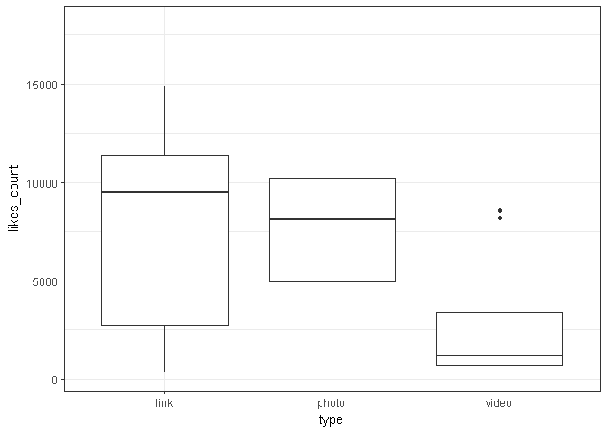

期末專題報告
題目: 勵志書暢銷的背後，吸引讀者的關鍵為何？
分析議題背景:
在這出版業人人喊苦,書店一間接著一間熄燈,勵志書籍為何能和工具書並駕齊驅甚至高居排行榜不下 Peter Su 是近年暢銷書作家,在百花齊放的社群上有著高人氣而出版的著作有著驚人的銷量.能在這出版業哀聲載道, 一刷2000本能賣完是萬幸的寒冬 還能賣出十萬本的書籍究竟是深藏著何種功夫? 這些書暢銷的背後，讀者追尋的是什麼？
分析動機:
話題》勵志散文：在暢銷的背後，讀者追尋的是什麼？ 看到這篇文章覺得很有意思,也想到今年於台北國際書展看到許多勵志書放置在顯眼的平台上,走過去總會忍不住拿起來翻個幾頁或是將封面書腰上的文字快速閱讀過 網路上對於此類的書籍評價正反兩極 (正方認為能夠帶來舒緩;反方持無病呻吟的看法) Peter Su能夠在短短一個月55刷衝破10萬本的銷量,不論內容是什麼,總是讓人很好奇,並想一探究竟
資料介紹與來源
假設:因為Peter Su是先由FB貼文引起關注而逐漸擁有許多粉絲,才得以出書.所以這裡並非分析他的著作,而是想透過其臉書內容來了解其為何能有極大的影響力,甚至是商機. -資料為暢銷作家Peter Su的臉書貼文
#install.packages("Rfacebook")
token<-"EAACEdEose0cBAEpZAs7Y9kTcrQhGeVCUoqmVH4Lgzk1LrDZBJHE2XsukVFoYZCcsTNETz2UlqjEMyoTJ96vtVyoHifM7Yy5hQfZCzZCcLNZAT6JbLxZAZCUpMNNZCiE45kYa3BRVRyV3SnR8ulO6TrnIh72rZBAnC55JvU1YwzjRXHk9xl9hKuFrvOH0jUvBgrH7IZD" #access token
library(Rfacebook) ## Loading required package: httr## Warning: package 'httr' was built under R version 3.3.3## Loading required package: rjson## Loading required package: httpuv## Warning: package 'httpuv' was built under R version 3.3.3##
## Attaching package: 'Rfacebook'## The following object is masked from 'package:methods':
##
## getGrouplastDate<-Sys.Date()
DateVector<-seq(as.Date("2017-02-01"),lastDate,by="7 days")
DateVectorStr<-as.character(DateVector)
totalPage<-NULL
for(i in 1:(length(DateVectorStr)-1)){
tempPage<-getPage("petesonline", token,
since = DateVectorStr[i],
until = DateVectorStr[i+1])
totalPage<-rbind(totalPage,tempPage)
Sys.sleep(2)
}## 2 posts 3 posts 7 posts 6 posts 5 posts 2 posts 6 posts 5 posts 5 posts 8 posts 6 posts 5 posts 7 posts 4 posts 4 posts 5 posts 3 posts 5 posts 5 posts 5 postsnrow(totalPage) #有幾筆資料## [1] 98格式
#先將不需要的欄位清除
totalPage$id <- NULL
totalPage$from_id <- NULL
totalPage$from_name <- NULL
totalPage$link <- NULL
#抓出發文時間
totalPage$time <- substr(totalPage$created_time, start=12, stop=13)
str(totalPage)## 'data.frame': 98 obs. of 8 variables:
## $ message : chr "沒有方向的等待並不是在等你回來，只是還找不到一個理由離開。\n\nInstagram: peter825" "無風不起浪，只要那吹起的風不是你，再大的浪也無所謂。\n\n昨日和朋友聊天有感，身邊總是有個曾經很在意的朋友，當初的安全感是和他一"| __truncated__ "幸福可能有千萬種模樣，直到有天我們都厭倦了外面那些爭得你死我活的情節，這個時候能有個人陪著自己過著普通的生活，說著無聊的廢話，"| __truncated__ "有時候真心的覺得，在這顛沛流離的世界裡還有人陪著真的很好。\n\nInstagram: peter825" ...
## $ created_time : chr "2017-02-07T14:06:19+0000" "2017-02-04T13:44:33+0000" "2017-02-14T14:53:35+0000" "2017-02-13T13:43:50+0000" ...
## $ type : chr "photo" "photo" "photo" "photo" ...
## $ story : chr NA NA NA NA ...
## $ likes_count : num 8814 8101 7629 14310 5390 ...
## $ comments_count: num 33 39 26 198 21 2 27 6 40 18 ...
## $ shares_count : num 207 317 230 539 24 0 146 32 737 81 ...
## $ time : chr "14" "13" "14" "13" ...分析議題&結果
假設:按讚數.分享數.留言數量越多表示有較高的互動,能帶來的商機.關注也越高 ### 1.發文附圖的重要性 發文不附圖 此風不可長 風靡全球的Instagram,其特色就是圖片在搭配一些文字.
#install.packages("ggplot2")
library(ggplot2)## Warning: package 'ggplot2' was built under R version 3.3.3ggplot(totalPage,aes(x=type,y=likes_count))+geom_boxplot()+theme_bw() 
2.發文好時機
12-14多半是大家午休時間,此時發文是個聰明的選擇
library(ggplot2)
dotchart(as.numeric(totalPage$time))
不同發文類型的關注度
mean(totalPage$likes_count) #平均每篇貼文的讚數## [1] 7285.612mean(totalPage$comments_count) #下方留言平均數## [1] 52.7449mean(totalPage$shares_count) # 分享次篇貼文的次數## [1] 355.9082range(totalPage$shares_count)## [1] 0 1589library(dplyr)## Warning: package 'dplyr' was built under R version 3.3.3##
## Attaching package: 'dplyr'## The following objects are masked from 'package:stats':
##
## filter, lag## The following objects are masked from 'package:base':
##
## intersect, setdiff, setequal, uniontotalpage_test <- NULL
totalpage_test <- totalPage
totalpage_test %>%
group_by(type) %>%
summarize(num_likes = mean(likes_count),
num_comment = mean(comments_count),
num_share = mean(shares_count)) %>%
arrange(desc(num_likes))## # A tibble: 3 × 4
## type num_likes num_comment num_share
## <chr> <dbl> <dbl> <dbl>
## 1 photo 8074.432 58.28378 371.6622
## 2 link 6516.833 45.66667 501.5833
## 3 video 3190.000 25.66667 113.0833探索式資料分析
#install.packages("jiebaR")
library(jiebaR)## Warning: package 'jiebaR' was built under R version 3.3.3## Loading required package: jiebaRD## Warning: package 'jiebaRD' was built under R version 3.3.3cutter <- worker()
#新增詞彙
new_user_word(cutter,'並不是',"n")## [1] TRUEnew_user_word(cutter,'有一天',"n")## [1] TRUEnew_user_word(cutter,'點個頭',"n")## [1] TRUEnew_user_word(cutter,'不一定',"n")## [1] TRUEnew_user_word(cutter,'那一年',"n")## [1] TRUEnew_user_word(cutter,'花了',"n")## [1] TRUEnew_user_word(cutter,'不喜歡',"n")## [1] TRUEnew_user_word(cutter,'一開始',"n")## [1] TRUEhead(sort(table(cutter[totalPage$message]),decreasing = T),3)##
## 的 你 peter825
## 360 123 68什麼詞彙會刺激大家的額葉? 正能量或負能量?
旅行 夢想 出發 等傳遞正能量的字眼
#install.packages("rJava")
#install.packages("Rwordseg", repos="http://R-Forge.R-project.org")
#install.packages("tm")
#install.packages("tmcn", repos="http://R-Forge.R-project.org", type="source")
#install.packages("wordcloud")
#install.packages("XML")
#install.packages("RCurl")
#install.packages("RPostgreSQL")
#devtools::install_github("lchiffon/wordcloud2")
options(java.home="C:\\Program Files\\Java\\jre1.8.0_60")
#Sys.setenv(JAVA_HOME="C:\\Program Files\\Java\\jre1.8.0_60\\bin")
#install.packages("htmlwidgets")
#devtools::install_github('ramnathv/htmlwidgets')
library(tm)## Warning: package 'tm' was built under R version 3.3.3## Loading required package: NLP##
## Attaching package: 'NLP'## The following object is masked from 'package:ggplot2':
##
## annotate## The following object is masked from 'package:httr':
##
## contentlibrary(tmcn)## # tmcn Version: 0.1-4library(rJava)
library(Rwordseg) # 中文斷詞工具## # Version: 0.2-1library(wordcloud)## Warning: package 'wordcloud' was built under R version 3.3.3## Loading required package: RColorBrewer# 過濾器設定
library(XML)## Warning: package 'XML' was built under R version 3.3.3library(wordcloud2)
# 建立文本物件
insertWords(toTrad(iconv(c("有一天","並不是","點個頭","不一定","那一年","花了","不喜歡","一開始"),
"big5", "UTF-8"), rev=TRUE))
db.stopwords<-data.frame(V1=c("了","的","https","goo","gl","peter","825","30","要","那就","com","tw","00"))
db.stopwords$V1<-as.character(db.stopwords$V1)
if (length(colnames(db.stopwords)) > 0) {
my.stopwords <- c(stopwordsCN(), stopwords("english"), db.stopwords[,1])
} else {
my.stopwords <- c(stopwordsCN(), stopwords("english"))
}
totalPage$message<- enc2utf8(totalPage$message)
totalPage$message<- totalPage$message[Encoding(totalPage$message)!='unknown']
head(segmentCN(totalPage$message))## [[1]]
## [1] "沒有" "方向" "的" "等待" "並不是"
## [6] "在" "等" "你" "回來" "只"
## [11] "是" "還" "找" "不" "到"
## [16] "一個" "理由" "離開" "Instagram" "peter"
## [21] "825"
##
## [[2]]
## [1] "無" "風" "不" "起" "浪"
## [6] "只要" "那" "吹" "起" "的"
## [11] "風" "不" "是" "你" "再"
## [16] "大" "的" "浪" "也" "無所謂"
## [21] "昨日" "和" "朋友" "聊天" "有感"
## [26] "身邊" "總是" "有" "個" "曾經"
## [31] "很" "在意" "的" "朋友" "當初"
## [36] "的" "安全感" "是" "和" "他"
## [41] "一起" "建造" "的" "雖然" "後"
## [46] "來" "那些" "風雨" "也" "是"
## [51] "他" "起" "的" "願" "我們"
## [56] "的" "身旁" "都" "還有" "那些"
## [61] "陪" "著" "自己" "守護" "這些"
## [66] "那些" "看似" "微不足道" "卻" "足"
## [71] "以" "改變" "一切" "的" "友情"
## [76] "Instagram" "peter" "825"
##
## [[3]]
## [1] "幸福" "可能" "有" "千萬種" "模樣"
## [6] "直" "到" "有" "天" "我們"
## [11] "都" "厭倦" "了" "外面" "那些"
## [16] "爭" "得" "你死我活" "的" "情節"
## [21] "這個" "時候" "能" "有" "個"
## [26] "人" "陪" "著" "自己" "過"
## [31] "著" "普通" "的" "生活" "說"
## [36] "著" "無聊" "的" "廢話" "鬥"
## [41] "著" "無數個" "小" "嘴" "其實"
## [46] "也" "算是" "幸福" "的" "呀"
## [51] "情人節" "快樂" "Instagram" "peter" "825"
##
## [[4]]
## [1] "有時候" "真心" "的" "覺得" "在"
## [6] "這" "顛沛流離" "的" "世界" "裡"
## [11] "還有" "人" "陪" "著" "真的"
## [16] "很" "好" "Instagram" "peter" "825"
##
## [[5]]
## [1] "這次" "在" "世貿" "一" "館"
## [6] "的" "國際" "書展" "有" "個"
## [11] "特別" "的" "活動" "只" "要"
## [16] "到" "城" "邦" "館" "B"
## [21] "910" "找到" "這塊" "背" "板"
## [26] "用" "手機" "軟體" "COCOAR" "2"
## [31] "拍照" "除了" "可以" "拍" "出"
## [36] "自己" "的" "封面" "外" "只"
## [41] "要" "將" "照片" "上" "傳"
## [46] "至" "臉" "書" "並" "打"
## [51] "卡" "國際" "書展" "城" "邦"
## [56] "館" "B" "910" "就" "可"
## [61] "享有" "購買" "我" "的" "書"
## [66] "66折" "的" "優惠" "啊" "有"
## [71] "路過" "的" "朋友" "們" "可以"
## [76] "去" "玩玩" "看" "這個" "軟體"
## [81] "拍" "出" "屬" "於" "你"
## [86] "的" "封面" "<U+653C>" "<U+613C>" "<U+623C>"
## [91] "<U+653C>" "<U+623C>" "活動" "期間" "2"
## [96] "8" "2" "13" "希望" "有"
## [101] "機會" "在" "現場" "碰到" "面"
## [106] "啦" "<U+653C>" "<U+613C>" "<U+623C>" "<U+653C>"
## [111] "<U+623C>" "Instagram" "peter" "825"
##
## [[6]]
## [1] "很" "會" "<U+653C>" "<U+613C>" "<U+623C>" "<U+653C>" "<U+623C>"
## [8] "<U+653C>" "<U+613C>" "<U+623C>" "<U+653C>" "<U+623C>" "<U+653C>" "<U+613C>"
## [15] "<U+623C>" "<U+653C>" "<U+623C>" "和" "亮" "哲" "遊"
## [22] "藝" "菲律賓" "外景" "中"d<-data.frame(table(unlist(segmentCN(totalPage$message))),decreasing =T)
names(d)<-c("word","freq")
d$word<-as.character(d$word)
wordcloud2(d[!d$word %in% my.stopwords & d$freq>5 & nchar(d$word)>1,],
fontFamily = "Microsoft JhengHei", minRotation = -pi/2, maxRotation = -pi/2)
分析結果可能解決的問題
-究竟是甚麼題材內容能夠讓大眾深深被吸引,造成一股旋風. -或許就如“看到的人會幸福吧”的概念,勵志書以作者真實的經驗來幫讀者找到抒發情緒的出口，陪同讀者走過低潮 -一眼抓住讀者目光的詞彙 -出書代言葉配的商機
組員名單與分工
胡茹芳—— 滷得很入味的魯蛇